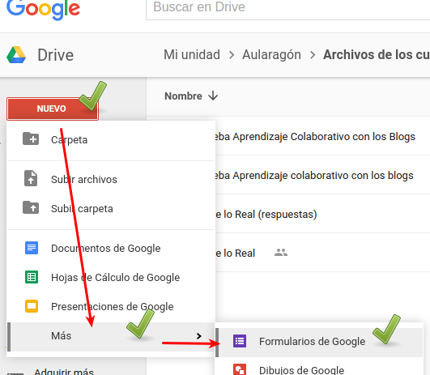
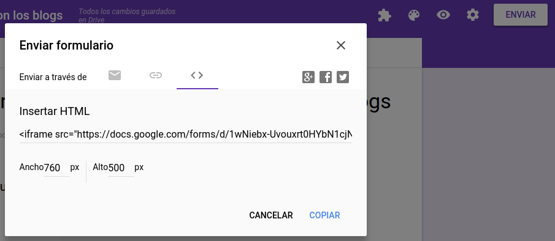

Encuestas
Consideramos las encuestas como un elemento colaborativo, pues son varias personas que participan en la información de un documento. Puede ser opiniones, cuestiones, preguntas abiertas,... aunque si se maneja en un sentido alumnos->profesor pierde el carácter colaborativo.

Pero, si se marca la opción que puedan ver las respuestas una vez finalizada la encuesta, o a la vez se está proyectando las respuestas-v-resultado de esta encuesta, tiene su realimentación en el otro sentido, y todos aprender de todos.
FORMULARIO DE GOOGLE
¿Qué es?
Es otro servicio de Google, muy intuitivo y muy fácil de hacer. Los resultados los visualiza en forma gráfica o de hoja de cálculo, y prácticamente es instantáneo que se puede usar en directo en clase
Los resultados se almacenan en una hoja de cálculo que automáticamente se crea en tu Drive.
¿Cómo se hace?
Entramos en Google - Drive con nuestra cuenta y abrimos un nuevo formulario:

Creas las preguntas, es muy intuitivo, vamos a señalar las que hay:
- Texto: Para textos no muy largos. Ejemplo: nombre, mail, teléfono....
- Textos párrafo: Para textos largos.
- Tipo test: Ofrece varias respuestas de las que el usuario deberá elegir una. Tenemos la opción de dejar una opción abierta, mediate el uso de otros y utilizar la respuesta como filtro para saltar a otra página del cuestionario.
- Elegir de una lista: En cuanto a su elaboración es similar a la anterior, pero en este caso el usuario sólo podrá elegir una de las alternativas que aparece en un desplegable.
- Escala: En este caso se pide adjudicar una calificación en una escala numérica, cuyos límites podemos personalizar, por ejemplo del 1 al 5 o del 1 al 10. Para evitar confusiones se nos permite añadir una descripción a los límites.
- Cuadrícula: Es la más compleja, permite construir un cuadro de doble entrada
Aquí tienes una página web que igualmente lo explica bien.
Cómo se embebe
Tenemos varios métodos en Enviar :
Con un enlace pulsando en el icono de la cadena nos facilita un enlace. Por email, ponemos la direcciones de correo separadas por coma y envía el enlace anterior.
- Lo podemos poner en la página web y que lo hagan tranquilamente en casa
- Si es en directo podemos ponerlo en el Twitter o generar el código QR (ya lo vimos en el tema 1) y proyectarlo y que la gente lo haga con el móvil
- Podemos embeberlo en la página web, en la pestaña < > tenemos el código

No hace falta que el usuario esté registrado en Google para hacer el cuestionario al menos que marquemos en el cuestionario que los usuarios no pueden repetirlo, luego sí que tienen que estar registrados en Google para que Google controle que no se pueda repetir ¡¡es lógico!!
¿Cómo queda?
Pues así queda embebido una encuesta sobre este curso ¡¡¡ pon tu respuesta !! es anónimo
¿Y se puede ver la respuestas?
Claro, las respuestas se vuelcan en una hoja de cálculo de Google y ya sabes cómo embeber una hoja de cálculo mira unos capítulos atrás
ENCUESTA CON PLAYBUZZ
Si eres de los que buscan un producto más visual, te recomendamos https://www.playbuzz.com/

Aprendizaje Colaborativo con Blogs por Javier Quintana Peiró bajo licencia Creative Commons Reconocimiento-NoComercial-CompartirIgual 4.0 Internacional License.